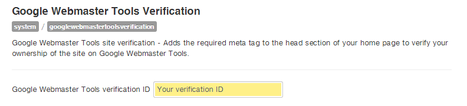

Google Webmaster Tools Verification for Joomla! 2.5 and Joomla! 3+
Google Webmaster Tools Verification is a Joomla! plugin which allows you to verify the ownership of a website on Google Webmaster Tools.
It adds the required meta tag to the home page of your Joomla! website.
Works with Joomla! 2.5 and Joomla! 3+
Installation
- From the "Extension Manager" choose "Upload Package File" and select the plg_googlewebmastertoolsverification_v1.0.zip file.
- Upload & Install.
Usage
- Go to the "Plugin Manager" and publish the "Google Webmaster Tools Verification" plugin.
- In your Google Webmaster Tools account choose HTML tag as your verification method.
- Copy the value of the content attribute:
<meta name="google-site-verification" content="Your verification ID" /> - Paste it in the "Google Webmaster Tools verification ID" plugin field and save.
 - Verify your website.
License
GNU/GPLv3 - http://www.gnu.org/licenses/gpl-3.0.html
Author
Google Webmaster Tools Verification is a plugin by Daniele De Santis.